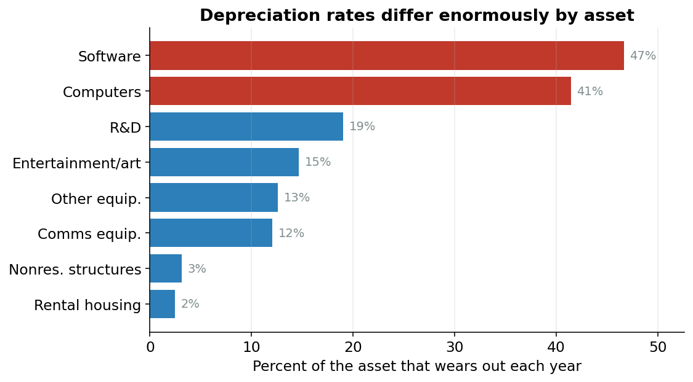

Capital Services: Why a Dollar of Computers ≠ a Dollar of Land
From workers to machines
Last page we measured the labor the economy can supply: how many people are working and for how many hours. But people don’t build cars with their bare hands. They build them with machines, factories, software, and tools. That second ingredient is capital, and it’s what we measure here.
Here’s the twist that makes this the trickiest page in the whole model. You might think measuring capital is easy: just add up the dollar value of everything a business owns. A million-dollar building plus a million-dollar pile of laptops is two million dollars of capital, right?
It turns out that’s wrong, and not just a little wrong. A dollar tied up in laptops does a very different amount of work for you in a year than a dollar tied up in land. To see why, we need to separate two ideas that sound identical but aren’t.
What you own vs. what it does for you
Capital stock is the dollar value of everything a business owns: machines, buildings, software, land, inventory. It’s a sticker price: what you’d pay to replace it all today.
Capital services is the flow of useful work that capital provides over a year: the actual productive help you get from those assets. This is what we want for production.
Think of a kitchen. The stock is the value of the oven, the knives, and the countertops sitting there. The services are the meals they help you cook this year. When we ask “how much can the economy produce?”, we care about the cooking, not the sticker price of the appliances.
Most of the time stock and services move together: buy more ovens, cook more meals. But the ratio between them is wildly different for different kinds of capital. And that ratio is the whole story.
The rent trick
Here’s the cleanest way to think about it. Forget owning assets for a second and imagine you had to rent every one of them for a year, the way you might rent a tool from a hardware store instead of buying it.
How much rent would a thing cost? It depends mostly on one thing: how fast it falls apart.
A laptop loses something like 40% of its value every single year.1 If you rented one to me, you’d have to charge a lot: enough to cover the huge chunk of value it loses while I’m using it, plus a normal profit. The yearly rent is a big fraction of the laptop’s price.
1 That is a real number from this model’s data: computer equipment depreciates at over 40% per year. A three-year-old laptop is nearly worthless.
Land is the opposite. Land doesn’t wear out at all. If you rented me an acre, the rent would be small: basically just a normal return on the money, with nothing extra for “wearing out,” because it doesn’t.
This wearing-out has a name.
Depreciation is how much of an asset wears out, on average, in one year, written as the Greek letter delta, \(\delta\). A laptop has a high \(\delta\) (it dies fast); a building has a low one; land’s is essentially zero.
Figure 1 shows just how far apart these rates are. They’re not within shouting distance of each other: short-lived gear and long-lived structures live in completely different worlds.

So here’s the punchline. If you just add up dollars, you treat a dollar of laptops and a dollar of land as the same thing. But a dollar of laptops is doing far more work for you each year. That’s exactly why it commands a high rent. Adding dollars understates the fast-wearing gear (computers, equipment) and overstates the long-lived stuff (land, structures).
The fix is simple to say: instead of weighting each asset by its sticker price, weight it by its yearly rent.
Putting a number on the rent
We never actually see these rents: businesses own their assets, they don’t rent them from a catalog. So the model has to compute what the rent would be. That implied yearly cost has a name.
The rental price of an asset is the implied cost of using one unit of it for a year. In words, it’s:
\[ \text{rental price} \;\propto\; (\rho + \delta - \pi) \times \tau \times K_{-1} \]
- \(\rho\) (rho) is the rate of return: the normal yearly profit any dollar should earn, the same number for every asset.
- \(\delta\) (delta) is depreciation: the wear-and-tear from Note 2. High for laptops, near zero for land.
- \(\pi\) (pi) is the expected price change: if the asset is getting cheaper over time (computers!), that’s like a small extra cost of holding it. The model uses a 5-year average so one weird year doesn’t swing it.
- \(\tau\) (tau) is a tax adjustment: taxes and tax breaks mean a dollar of rent doesn’t translate one-for-one into income, so we scale it.
- \(K_{-1}\) is the asset’s stock at the start of the year: how much of it you had to begin with.
Don’t memorize the formula. Just hold onto the intuition: rent goes up when an asset wears out fast or is losing value, and that’s why a dollar of computers carries far more rent than a dollar of land.
One nice detail: the rate of return \(\rho\) is solved so that all ten rents, added up, exactly equal the total income that capital earned in the economy that year.2 Land’s share is set last, as whatever’s left over, so everything balances to the penny.
2 This is the Jorgenson-Hall identity, after the two economists who worked it out in 1967. It’s just a consistency check: the rents have to add up to the real money capital actually earned.
Adding things up the right way: an index
Now we know each asset’s rent. How do we combine ten different kinds of capital (growing at ten different speeds) into a single measure of “capital services” for the whole economy?
We build an index.
An index is a number that tracks how something changes over time, set to a convenient baseline. Here the baseline is the year 2009 = 1.0. So an index value of 1.13 means “13% more than in 2009,” and 0.50 means “half of the 2009 level.” The dollar units wash out; only the growth matters.
The specific recipe is called a Törnqvist index (pronounced TORN-kvist, it’s named after a Finnish economist, so don’t worry about the spelling). It sounds fancy but the idea is a weighted average:
Take each asset’s growth rate this year, multiply it by that asset’s share of the total rental bill, and add them all up.
A fast-growing asset only moves the total a lot if it’s also a big slice of the rent. This is the crucial point. Computers grew like crazy over the decades, but they’re a small piece of the overall rental bill, so they nudge the index rather than dominate it. The heavy hitters are structures (factories, offices) and equipment.
Figure 2 shows these weights (each asset’s rental share) for the year 2009. Notice that structures and equipment carry big chunks, while computers, despite all their growth, are a thin sliver of the total bill.
The model tracks ten asset types in all: three kinds of equipment (computers, communications gear, other), three kinds of intellectual property (software, R&D, and entertainment/literary/artistic originals), nonresidential structures, rented residential housing, land, and inventories.
The code, line by line
Here’s the heart of it from capital_services.py. It’s shorter than the idea makes it sound.
rentprop = factor_shares["rentprop"]
sharebar = frac_shares.rolling(2).mean()
# Build log-growth rates per asset
log_growth = {}
for asset in EQUIPMENT + IPP + ["str", "lnd", "inv"]:
q = _qkni(asset, df)
log_growth[asset] = np.log(q / q.shift(1))
# Tenant-occupied: log-growth of rentprop · qknifixr
tor_quantity = rentprop * df["qknifixr"]
log_growth["tor"] = np.log(tor_quantity / tor_quantity.shift(1))
log_growth_df = pd.DataFrame(log_growth)
delta_log_kbar = (sharebar * log_growth_df).sum(axis=1)
# Chain: start temp_chain at 1 in 1948 (EViews lines 968-972) and
# cumulate exp(Δlog K̄) thereafter.
temp_chain = pd.Series(np.nan, index=df.index)
if 1948 in temp_chain.index:
temp_chain.loc[1948] = 1.0
years = sorted([y for y in df.index if y >= 1949])
prev = 1948
for year in years:
temp_chain.loc[year] = temp_chain.loc[prev] * np.exp(delta_log_kbar.loc[year])
prev = year
icap = temp_chain / temp_chain.loc[base_year]Walk through it the way you’d read a recipe:
sharebaris each asset’s rental share, averaged over two years (this year and last). Using a two-year average is a small technical fix that makes the index mathematically exact: the linefrac_shares.rolling(2).mean()is doing exactly that.log_growthis each asset’s growth rate: how much more (or less) of that asset there was this year than last.3delta_log_kbar = (sharebar * log_growth_df).sum(axis=1)is the whole Törnqvist idea in one line: multiply each asset’s growth by its rental-share weight, then add them across all the assets. That’s the year’s total capital-services growth.The chaining loop then links these yearly growth rates into one continuous series, starting at 1.0 in 1948 and multiplying outward.
The last line,
icap = temp_chain / temp_chain.loc[base_year], re-centers everything so that 2009 = 1.0, our baseline year.
3 We use the log of the growth ratio, a standard trick that makes growth rates add up cleanly. Reading it as “the percent change” loses nothing here.
The result is a single series, icap. In 1948 it sits at about 0.12: the economy’s capital base did roughly an eighth of the work it would do in 2009. By 2016 it reaches about 1.13, or 13% above the 2009 level. Over the whole stretch, capital services grew about 3.4% per year.
Two ingredients down, one to go
We now have both of the things you can touch: the workers (labor) and the machines (capital). Pour them into the production engine and you’d expect to get output.
But you don’t get all of it. Year after year, the economy produces more than labor and capital alone can explain: the same workers and the same machines somehow make more than they used to. That leftover is the secret sauce of growth, and it’s what we measure next: productivity.